|
IdentityGuard Server 13.0 Administration Guide |
|
IdentityGuard Server 13.0 Administration Guide |
There are many reports available that you can run right away. To launch a report, follow the instructions in the following procedure.
You cannot schedule reports to run at specific times. You must launch them manually.
To create reports in the Administration interface
1. Log in to the Entrust IdentityGuard Administration interface as the administrator.
 On the
Windows computer where Entrust IdentityGuard is installed
On the
Windows computer where Entrust IdentityGuard is installed
2. Click Reports.
The Select a report screen appears, displaying the list of available reports.
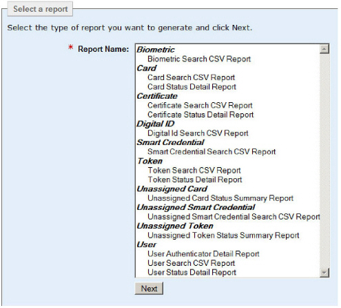
3. Select the report you want to run, and click Next.
The Choose your report options screen appears.
The top portion of the screen shows the general report options. It displays the name of the report you have chosen and the information message you configured in the Properties Editor (Report Definitions > Report Information), if specified.
It also displays the output format to use for the report.
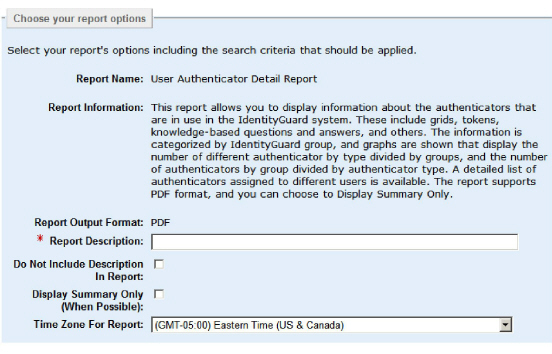
4. Specify the following options for your report:
● Report Description — Enter a text description of the report being generated. This is a mandatory field, and in the default case, this description is displayed in the report. You can enter a maximum of 255 characters.
● Use this field to describe the search criteria you are using. This helps you and other administrators tell the difference between two reports with the same report name when you look at the results later.
● Do Not Include Description in Report — Select this option only if you do not want the report description displayed in the report. Typically, it is useful to have this information displayed in the report (default setting)
● Display Summary Only — Select this option to display only the summary of the report, if a summary is available for that report type. If a summary is not available, the full report is generated. You can find out whether the report template includes a summary by reading the information message at the top of the form.
● Time Zone For Report — Select the applicable time zone from the drop-down list. The default is the time zone of the Entrust IdentityGuard server. Reports generated for your time zone use your current local time, adjusted for Daylight Savings Time (DST).
Note: This setting label does not reflect whether the time zone uses Daylight Savings Time (DST).
5. Use the personal query section of the report options screen to select a personal query for reporting (if there are any).
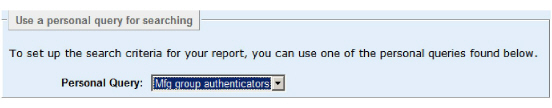
● See Create a personal report query to set up personal report queries.
OR
● If you have already set up a personal query for the current report type, select one from the Personal Query drop-down list. After you select one, the starting set of search criteria for your report are displayed in the search criteria pane below.
6. Select the search criteria for the report you are generating. The search criteria screen is different for each of the different data sources. Select an item in the following list to see more detail.
● Audit search criteria.
Note: When you have an audit database configured, you can create audit reports. See Configure an audit database for instructions.
For instructions on using the audit search criteria, see To find audits to view in the Administration interface.
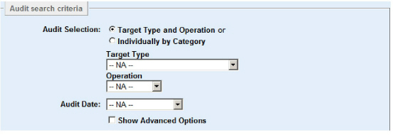
● Biometric search criteria.
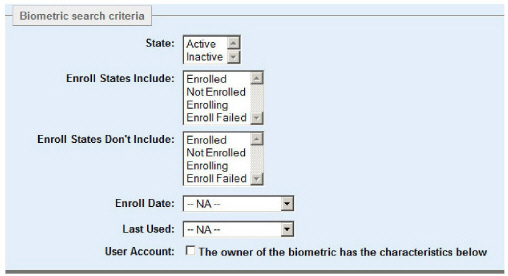
For instructions on using the biometric search pane, see Finding biometric information.
● If you are generating a Card report, select the Card search criteria.
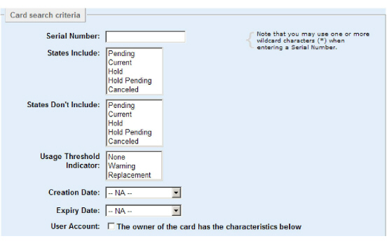
For instructions on using the card search pane, see Finding grid card information.
● If you are generating a Certificate report, select the Certificate search criteria.
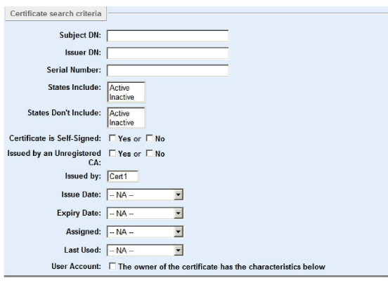
For instructions on using the certificate search pane, see Finding user certificates.
● If you are generating a Digital ID report, select the digital ID search criteria.
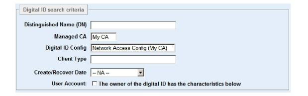
For instructions on using the Digital ID search criteria pane, see Finding digital IDs.
● If you are generating a Smart Credential report, select the smart credential search criteria.
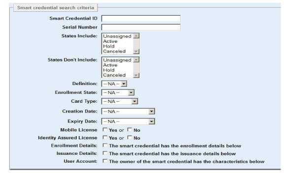
For instructions on using the Smart credential search criteria pane, see Find users by smart credential.
● If you are generating a Token report, select the Token search criteria. The Token Vendor field appears only if you have more than one token vendor configured.
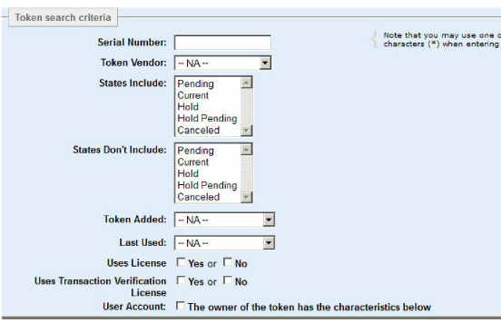
For instructions on using the token search pane, see Finding assigned token information .
● If you are generating an Unassigned Card report, select the Unassigned card search criteria.
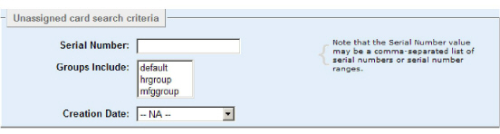
For instructions on using the unassigned card search pane, see Find unassigned grid card information.
● If you are generating an Unassigned Smart Credential report, select the Unassigned smart credential search criteria.
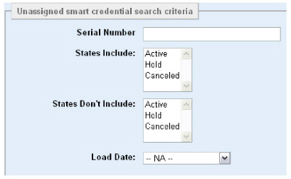
For instructions on using the Unassigned smart credential search criteria pane, see the Entrust IdentityGuard Smart Credentials Guide.
● If you are generating an Unassigned Token report, select the Unassigned token search criteria. The Token Vendor field appears only if you have more than one token vendor configured.
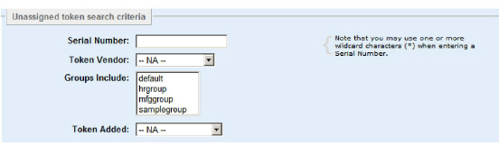
For instructions on using the unassigned token search pane, see Find information about unassigned tokens.
● If you are generating a User report, select the User search criteria.
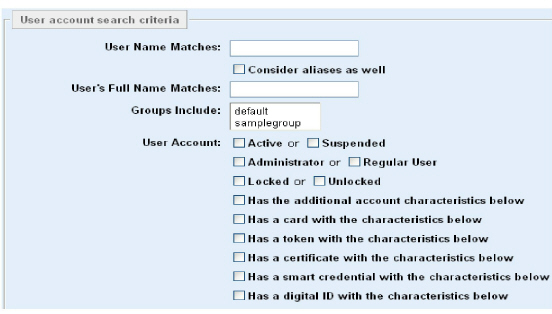
For instructions on using the user search pane, see Searching for user information.
7. To save this set of search criteria so that you can run it again in the future, select Save As Personal Query, and enter a name to use when saving the query.
Note: Personal queries you create and save are not visible to others, and cannot be shared with other administrators.
If you are using a personal query, the name of the personal query appears automatically in this pane. This allows you to update an existing query or create a new one, as required.
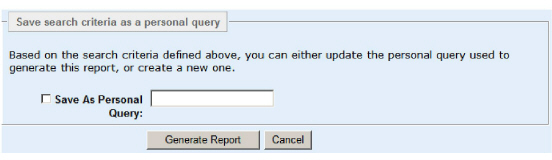
8. Click Generate Report to start the report creation.
The report list appears with the newly created report at the top of the list.
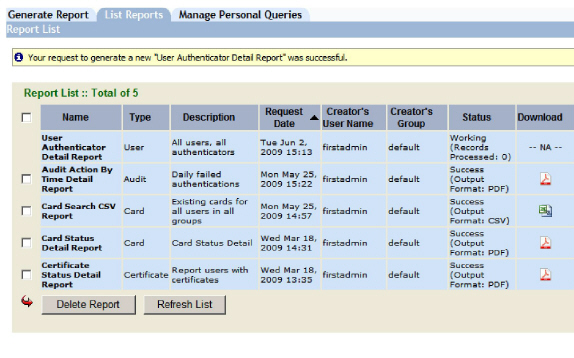
When the report generation is complete, the list entry for the new report shows the Success Status, and an Adobe (PDF) or Microsoft (CSV) icon in the Download column.
Note: You may cancel report generation while the report is in the queue, as long as it has not yet started the data acquisition stage. After the report starts to acquire data, it cannot be canceled.
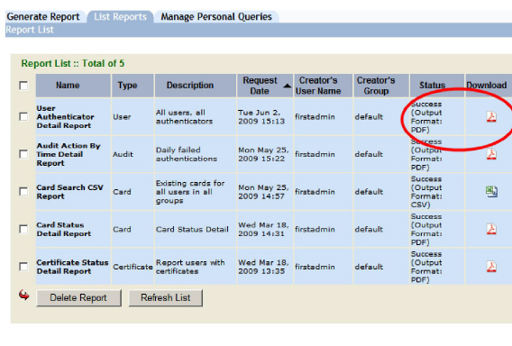
9. Click the Adobe or Microsoft icon to view the report.
Note: You must have Adobe Reader® or a similar PDF reader installed to view the PDF files.
The first page of an example PDF report is shown here.
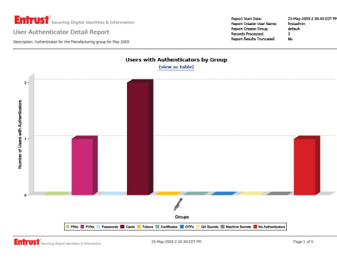